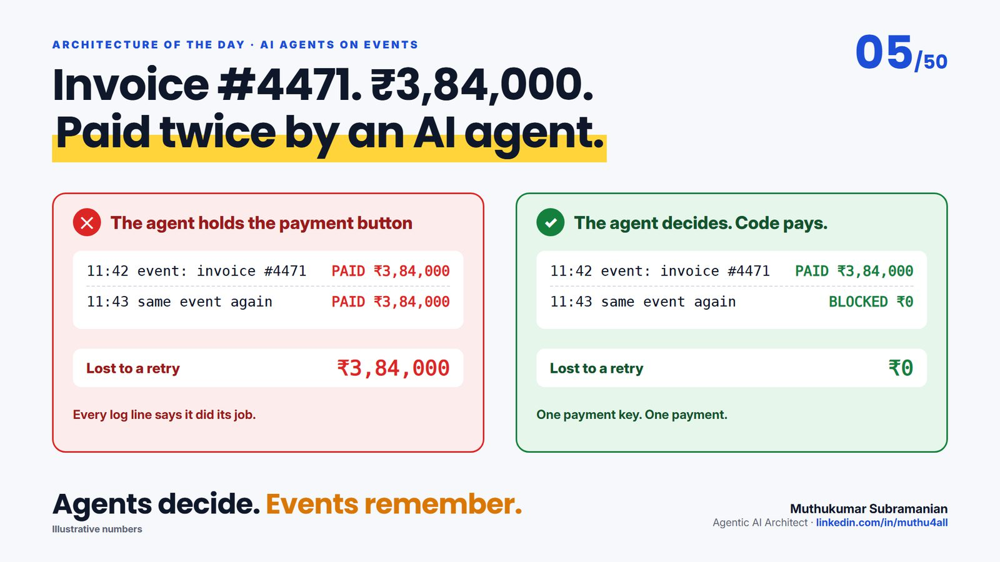

Your AI Agent Just Paid the Same Invoice Twice.
By Muthukumar Subramanian · Agentic AI Architect

Month-end, Tuesday, 11:42 PM. Your accounts payable agent sees invoice #4471 from a steel supplier in Coimbatore. ₹3,84,000. It checks the purchase order, matches the goods receipt, and releases the payment. Good agent.
At 11:43, the network blinks. The acknowledgement gets lost. The event gets delivered again.
The agent sees invoice #4471. It checks the purchase order, matches the goods receipt, and releases the payment.
₹3,84,000. Twice. And every log line says the agent did its job. (The story is illustrative. The failure isn't.)
The agent wasn't wrong. It was doing exactly what we asked. Nobody told it that "the same event twice" is a normal Tuesday.
The architecture today
Most modern back offices run on events. Something happens (invoice received, order placed, claim filed), a message goes onto a backbone like Kafka or EventBridge, and any system that cares picks it up. Nobody calls anybody directly, so systems stay loosely coupled and work keeps flowing.
Here's the part every event engineer knows and most AI teams don't: these systems promise "at least once", not "exactly once". A message can arrive twice. AWS's own guidance says consumers should identify and safely handle duplicates. That's fine when a duplicate updates a dashboard. It's not fine when the consumer holds a payment button.
👉 [IMAGE: A-day05-2-in-article-architecture.png]
Caption: The agent decides. The payment service pays, once. Grey is what you already have. Amber is new.
Where AI plugs in now: the agent as an event consumer
Put the agent on the backbone as one more consumer, and give it one job: read the event and emit a decision as a new event. Never let it touch the money directly.
→ Invoice received goes in.
→ The agent reads and decides: does it match the PO and the goods receipt, and is anything odd?
→ The agent emits "payment requested" with a unique key, built from the invoice number and vendor.
→ Plain code does the paying. It checks the key, and if that key has been paid, it drops the duplicate. No model involved.
I said this on Day 2 and in "Let AI Talk. Let Code Count.", and I'll keep saying it: agents decide, code counts.
Start read-only. Let the agent flag mismatches for three months, and let a person release payments. Your accounts team will tell you very quickly how often it's right.
Where it's heading with agents
In two or three years, I expect back offices to run as a chain of agents reacting to each other's events. The invoice agent flags a price mismatch. The procurement agent picks that up and asks the supplier. The treasury agent holds the payment. Nobody scheduled any of it.
That's powerful, and it's also how a small mistake spreads through a whole company before lunch. Which is why the event log becomes the most valuable thing you own. Every decision, every input, in order, replayable. When the auditor asks why the agent paid, the event log answers.
👉 [IMAGE: A-day05-3-in-article-four-guards.png]
Caption: Four guards before any agent goes near a payment. Screenshot this for your finance team.
Watch it work
Same event, delivered twice. The first gets paid. The second gets dropped.
👉 [GIF: A-day05-4-in-article-duplicate-blocked.gif]
Caption: A duplicate event hits the payment guard and stops there. ₹3,84,000 stays in your account.
Pros
→ Agents plug into what's already flowing, with no rewrite of ERP or banking systems
→ Every decision is an event, so you get an audit trail for free
→ Failures stay contained: if the agent is down, events wait for it
Cons
→ Duplicates, out-of-order events and retries are the default, and most AI demos never test them
→ A chain of agents is hard to debug: one wrong event can trigger five confident actions
→ Idempotency keys need real thought. Same invoice number, different vendor? Revised invoice? Someone has to decide
The opportunity
Here's what I keep seeing. The agent works in the demo. Then it meets the real invoice run: the retries, the revised bills, the vendor with two GSTINs. The people who close that gap sit with the finance team and ship on the customer's actual systems. The industry now calls them forward deployed engineers (FDEs), a title that started at Palantir and has spread fast. Indian FDE job postings rose nearly 19-fold in a year on Indeed's numbers, from a small base. The titles are still settling, but the work is real.
So the market is autonomous back-office operations: accounts payable, claims and order exceptions, run by agents on the event backbone companies already own. The buyer is the CFO who has seen one duplicate payment too many. The seller is whoever can bring an FDE into the finance team and prove, on their data, that nothing gets paid twice.
Tools to try
Apache Kafka or Confluent for the backbone · Amazon EventBridge with Bedrock AgentCore · Azure Event Grid with Microsoft Agent Framework · LangGraph for the agent's decision flow · any model behind it: OpenAI, Claude, Gemini or an open model.
Your turn 👇
Would you let an AI agent release a payment on its own this year? Yes or no.
Tag the finance person who once caught a duplicate payment by hand. They'll have stories.
Day 5 of 50 · follow along. Tomorrow: the model API goes down at month-end. Where do 12,000 invoices go?